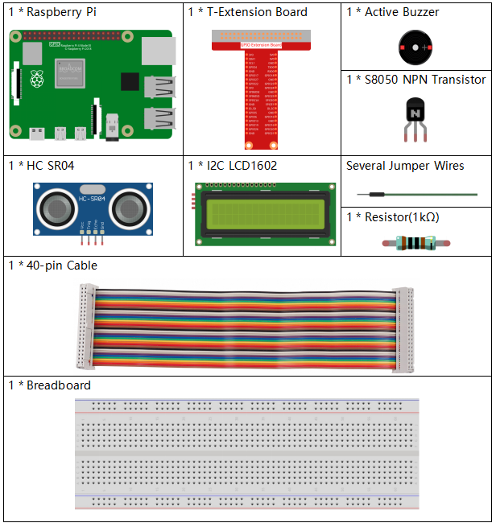
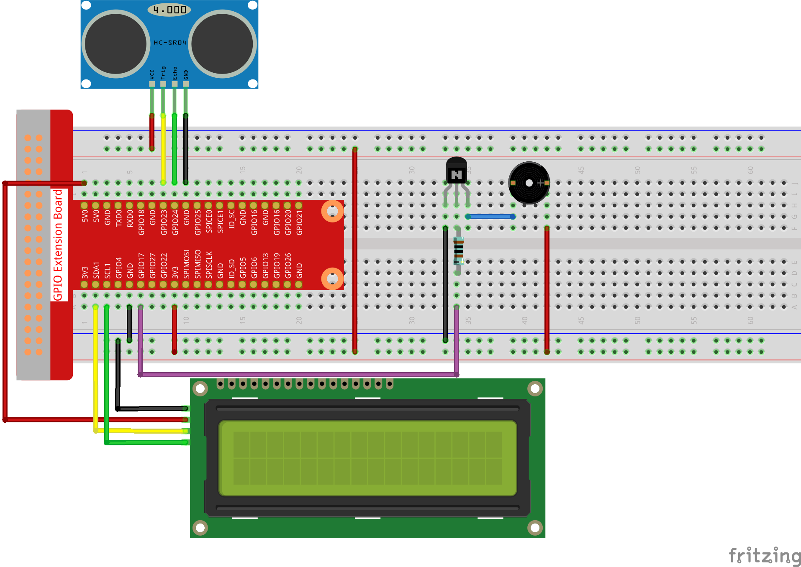

Nota
Hola, ¡bienvenido a la Comunidad de Entusiastas de SunFounder Raspberry Pi, Arduino y ESP32 en Facebook! Profundiza en Raspberry Pi, Arduino y ESP32 con otros entusiastas.
¿Por qué unirte?
Soporte experto: Resuelve problemas postventa y desafíos técnicos con la ayuda de nuestra comunidad y equipo.
Aprende y comparte: Intercambia consejos y tutoriales para mejorar tus habilidades.
Previsualizaciones exclusivas: Accede anticipadamente a anuncios de nuevos productos y adelantos.
Descuentos especiales: Disfruta de descuentos exclusivos en nuestros productos más recientes.
Promociones festivas y sorteos: Participa en sorteos y promociones especiales.
👉 ¿Listo para explorar y crear con nosotros? Haz clic en [Aquí] y únete hoy mismo.
3.1.3 Alarma de Reversa
Introducción
En este proyecto, utilizaremos una pantalla LCD, un zumbador y sensores ultrasónicos para crear un sistema de asistencia de reversa. Podemos instalarlo en un vehículo de control remoto para simular el proceso real de retroceder el automóvil hacia el garaje.
Componentes
Diagrama Esquemático
El sensor ultrasónico detecta la distancia entre sí y el obstáculo, que se mostrará en el LCD en forma de código. Al mismo tiempo, el sensor ultrasónico hace que el zumbador emita un sonido de advertencia con diferentes frecuencias según el valor de la distancia.
T-Board Name |
physical |
wiringPi |
BCM |
GPIO23 |
Pin 16 |
4 |
23 |
GPIO24 |
Pin 18 |
5 |
24 |
GPIO17 |
Pin 11 |
0 |
17 |
SDA1 |
Pin 3 |
||
SCL1 |
Pin 5 |
{kind=link}
Procedimientos Experimentales
Paso 1: Construir el circuito.
{kind=link}
Para Usuarios de Lenguaje C
Paso 2: Cambiar de directorio.
cd ~/davinci-kit-for-raspberry-pi/c/3.1.3/
Paso 3: Compilar.
gcc 3.1.3_ReversingAlarm.c -lwiringPi
Paso 4: Ejecutar.
sudo ./a.out
Al ejecutar el código, el módulo de sensor ultrasónico detectará la distancia hasta el obstáculo y luego mostrará la información sobre la distancia en la pantalla LCD1602; además, el zumbador emitirá un tono de advertencia cuya frecuencia cambia según la distancia.
Nota
Si aparece un error de
wiringPi.h: No such file or directory, consulta Instalar y Verificar wiringPi.Si recibes el error
Unable to open I2C device: No such file or directory, consulta Configuración de I2C para habilitar I2C y verificar si el cableado es correcto.Si el código y el cableado están bien, pero el LCD aún no muestra contenido, puedes ajustar el potenciómetro en la parte posterior para aumentar el contraste.
Código
Nota
Los siguientes códigos están incompletos. Si deseas ver el código completo,
se sugiere usar el comando nano 3.1.1_ReversingAlarm.c.
#include <wiringPi.h>
#include <stdio.h>
#include <sys/time.h>
#include <wiringPi.h>
#include <wiringPiI2C.h>
#include <string.h>
#define Trig 4
#define Echo 5
#define Buzzer 0
int LCDAddr = 0x27;
int BLEN = 1;
int fd;
// Función para el LCD
void write_word(int data){...}
void send_command(int comm){...}
void send_data(int data){...}
void lcdInit(){...}
void clear(){...}
void write(int x, int y, char data[]){...}
// Función para el Ultrasonido
void ultraInit(void){...}
float disMeasure(void){...}
// Función principal
int main(void)
{
float dis;
char result[10];
if(wiringPiSetup() == -1){
printf("setup wiringPi failed !");
return 1;
}
pinMode(Buzzer,OUTPUT);
fd = wiringPiI2CSetup(LCDAddr);
lcdInit();
ultraInit();
clear();
write(0, 0, "Ultrasonic Starting");
write(1, 1, "By Sunfounder");
while(1){
dis = disMeasure();
printf("%.2f cm \n",dis);
delay(100);
digitalWrite(Buzzer,LOW);
if (dis > 400){
clear();
write(0, 0, "Error");
write(3, 1, "Out of range");
delay(500);
}
else
{
clear();
write(0, 0, "Distance is");
sprintf(result,"%.2f cm",dis);
write(5, 1, result);
if(dis>=50)
{delay(500);}
else if(dis<50 & dis>20) {
for(int i=0;i<2;i++){
digitalWrite(Buzzer,HIGH);
delay(50);
digitalWrite(Buzzer,LOW);
delay(200);
}
}
else if(dis<=20){
for(int i=0;i<5;i++){
digitalWrite(Buzzer,HIGH);
delay(50);
digitalWrite(Buzzer,LOW);
delay(50);
}
}
}
}
return 0;
}
Explicación del Código
pinMode(Buzzer,OUTPUT);
fd = wiringPiI2CSetup(LCDAddr);
lcdInit();
ultraInit();
En este programa, aplicamos de forma conjunta los componentes vistos anteriormente. Aquí utilizamos un zumbador, una pantalla LCD y un sensor ultrasónico. Podemos inicializarlos de la misma manera que lo hicimos antes.
dis = disMeasure();
printf("%.2f cm \n",dis);
digitalWrite(Buzzer,LOW);
if (dis > 400){
write(0, 0, "Error");
write(3, 1, "Out of range");
}
else
{
write(0, 0, "Distance is");
sprintf(result,"%.2f cm",dis);
write(5, 1, result);
}
Aquí obtenemos el valor del sensor ultrasónico y calculamos la distancia.
Si el valor de la distancia es mayor al rango a detectar, se imprime un mensaje de error en el LCD. Si el valor de la distancia está dentro del rango, se muestran los resultados correspondientes.
sprintf(result,"%.2f cm",dis);
Dado que el modo de salida de LCD solo admite el tipo de carácter, y la variable dis almacena el valor en tipo float, necesitamos usar sprintf(). Esta función convierte el valor de tipo float en un carácter y lo almacena en la variable de cadena result[]. %.2f indica que se mantendrán dos decimales.
if(dis>=50)
{delay(500);}
else if(dis<50 & dis>20) {
for(int i=0;i<2;i++){
digitalWrite(Buzzer,HIGH);
delay(50);
digitalWrite(Buzzer,LOW);
delay(200);
}
}
else if(dis<=20){
for(int i=0;i<5;i++){
digitalWrite(Buzzer,HIGH);
delay(50);
digitalWrite(Buzzer,LOW);
delay(50);
}
}
Esta condición de juicio se usa para controlar el sonido del zumbador. Según la distancia, se divide en tres casos, en los que se emiten diferentes frecuencias de sonido. Como el valor total de delay es 500, todos los casos pueden proporcionar un intervalo de 500 ms para el sensor ultrasónico.
Para Usuarios de Python
Paso 2: Cambiar de directorio.
cd ~/davinci-kit-for-raspberry-pi/python/
Paso 3: Ejecutar.
sudo python3 3.1.3_ReversingAlarm.py
Al ejecutar el código, el módulo de sensor ultrasónico detecta la distancia al obstáculo y muestra la información sobre la distancia en el LCD1602; además, el zumbador emite un tono de advertencia cuya frecuencia varía con la distancia.
Nota
Si recibes el error
FileNotFoundError: [Errno 2] No such file or directory: '/dev/i2c-1', consulta Configuración de I2C para habilitar I2C.Si aparece
ModuleNotFoundError: No module named 'smbus2', ejecutasudo pip3 install smbus2.Si el error
OSError: [Errno 121] Remote I/Oaparece, significa que el módulo está mal conectado o está dañado.Si el código y el cableado están bien, pero el LCD aún no muestra contenido, puedes ajustar el potenciómetro en la parte posterior para aumentar el contraste.
Código
Nota
Puedes Modificar/Restablecer/Copiar/Ejecutar/Detener el código a continuación. Pero antes de eso, debes ir a la ruta del código fuente como davinci-kit-for-raspberry-pi/python.
import LCD1602
import time
import RPi.GPIO as GPIO
TRIG = 16
ECHO = 18
BUZZER = 11
def lcdsetup():
LCD1602.init(0x27, 1) # init(dirección del esclavo, luz de fondo)
LCD1602.clear()
LCD1602.write(0, 0, 'Ultrasonic Starting')
LCD1602.write(1, 1, 'By SunFounder')
time.sleep(2)
def setup():
GPIO.setmode(GPIO.BOARD)
GPIO.setup(TRIG, GPIO.OUT)
GPIO.setup(ECHO, GPIO.IN)
GPIO.setup(BUZZER, GPIO.OUT, initial=GPIO.LOW)
lcdsetup()
def distance():
GPIO.output(TRIG, 0)
time.sleep(0.000002)
GPIO.output(TRIG, 1)
time.sleep(0.00001)
GPIO.output(TRIG, 0)
while GPIO.input(ECHO) == 0:
a = 0
time1 = time.time()
while GPIO.input(ECHO) == 1:
a = 1
time2 = time.time()
during = time2 - time1
return during * 340 / 2 * 100
def destroy():
GPIO.output(BUZZER, GPIO.LOW)
GPIO.cleanup()
LCD1602.clear()
def loop():
while True:
dis = distance()
print (dis, 'cm')
print ('')
GPIO.output(BUZZER, GPIO.LOW)
if (dis > 400):
LCD1602.clear()
LCD1602.write(0, 0, 'Error')
LCD1602.write(3, 1, 'Out of range')
time.sleep(0.5)
else:
LCD1602.clear()
LCD1602.write(0, 0, 'Distance is')
LCD1602.write(5, 1, str(round(dis,2)) +' cm')
if(dis>=50):
time.sleep(0.5)
elif(dis<50 and dis>20):
for i in range(0,2,1):
GPIO.output(BUZZER, GPIO.HIGH)
time.sleep(0.05)
GPIO.output(BUZZER, GPIO.LOW)
time.sleep(0.2)
elif(dis<=20):
for i in range(0,5,1):
GPIO.output(BUZZER, GPIO.HIGH)
time.sleep(0.05)
GPIO.output(BUZZER, GPIO.LOW)
time.sleep(0.05)
if __name__ == "__main__":
setup()
try:
loop()
except KeyboardInterrupt:
destroy()
Explicación del Código
def lcdsetup():
LCD1602.init(0x27, 1) # init(dirección del esclavo, luz de fondo)
def setup():
GPIO.setmode(GPIO.BOARD)
GPIO.setup(TRIG, GPIO.OUT)
GPIO.setup(ECHO, GPIO.IN)
GPIO.setup(BUZZER, GPIO.OUT, initial=GPIO.LOW)
lcdsetup()
En este programa, aplicamos de forma conjunta los componentes usados anteriormente. Aquí empleamos un zumbador, un LCD y un sensor ultrasónico, y podemos inicializarlos de la misma manera que hicimos antes.
dis = distance()
print (dis, 'cm')
print ('')
GPIO.output(BUZZER, GPIO.LOW)
if (dis > 400):
LCD1602.clear()
LCD1602.write(0, 0, 'Error')
LCD1602.write(3, 1, 'Out of range')
time.sleep(0.5)
else:
LCD1602.clear()
LCD1602.write(0, 0, 'Distance is')
LCD1602.write(5, 1, str(round(dis,2)) +' cm')
Aquí obtenemos los valores del sensor ultrasónico y calculamos la distancia. Si el valor de la distancia supera el rango de detección, se muestra un mensaje de error en el LCD. Si la distancia está dentro del rango de funcionamiento, se muestran los resultados correspondientes.
LCD1602.write(5, 1, str(round(dis,2)) +” cm”)
Dado que la salida del LCD solo admite tipos de caracteres, necesitamos usar str() para convertir los valores numéricos en caracteres. Redondearemos el valor a dos decimales.
if(dis>=50)
{delay(500);}
else if(dis<50 & dis>20) {
for(int i=0;i<2;i++){
digitalWrite(Buzzer,HIGH);
delay(50);
digitalWrite(Buzzer,LOW);
delay(200);
}
}
else if(dis<=20){
for(int i=0;i<5;i++){
digitalWrite(Buzzer,HIGH);
delay(50);
digitalWrite(Buzzer,LOW);
delay(50);
}
}
Esta condición se usa para controlar el sonido del zumbador. Según la distancia, se divide en tres casos, en los que habrá diferentes frecuencias de sonido. Dado que el valor total de delay es 500, todos los casos proporcionan un intervalo de 500 ms para que el sensor ultrasónico funcione.
Imagen del Fenómeno